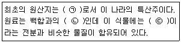
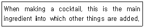

조주기능사 (2014-04-06 기출문제)
1과목: 주류학개론
1. 진(Gin)이 제일 처음 만들어진 나라는?
- 프랑스
- 네덜란드
- 영국
- 덴마크
(정답률: 80%)

2. 다음 중 식전주로 가장 적합한 것은?
- 맥주(Beer)
- 드람뷔이(Drambuie)
- 캄파리(Campari)
- 꼬냑(Cognac)
(정답률: 73%)
3. 다음 중 Fortified Wine이 아닌 것은?
- Sherry Wine
- Vermouth
- Port Wine
- Blush Wine
(정답률: 52%)
4. 화이트와인용 포도품종이 아닌 것은?
- 샤르도네
- 시라
- 소비뇽 블랑
- 삐노 블랑
(정답률: 71%)
5. 혼성주의 특징으로 옳은 것은?
- 사람들의 식욕부진이나 원기 회복을 위해 제조되었다.
- 과일 중에 함유되어 있는 당분이나 전분을 발효시켰다.
- 과일이나 향료, 약초 등 초근목피의 침전물로 향미를 더하여 만든 것으로, 현재는 식후주로 많이 애음된다.
- 저온 살균하여 영양분을 섭취할 수 있다.
(정답률: 76%)
6. 아쿠아비트(Aquavit)에 대한 설명 중 틀린 것은?
- 감자를 당화시켜 연속 증류법으로 증류한다.
- 혼성주의 한 종류로 식후주에 적합하다.
- 맥주와 곁들여 마시기도 한다.
- 진(Gin)의 제조 방법과 비슷하다.
(정답률: 55%)
7. 스팅거(Stinger)를 제공하는 유리잔(Glass)의 종류는?
- 하이볼(High ball) 글라스
- 칵테일(Cocktail) 글라스
- 올드 패션드(Old Fashioned) 글라스
- 사워(Sour) 글라스
(정답률: 54%)
8. 주정 강화로 제조된 시칠리아산 와인은?
- Champagne
- Grappa
- Marsala
- Absente
(정답률: 50%)
9. Scotch whisky에 대한 설명으로 옳지 않은 것은?
- Malt whisky는 대부분 Pot still을 사용하여 증류한다.
- Blended whisky는 Malt whisky와 Grain whisky를 혼합한 것이다.
- 주원료인 보리는 이탄(Peat)의 연기로 건조시킨다.
- Malt whisky는 원료의 향이 소실되지 않도록 반드시 1회만 증류한다.
(정답률: 66%)
10. 커피의 품종에서 주로 인스턴트커피의 원료로 사용되고 있는 것은?
- 로부스타
- 아라비카
- 리베리카
- 레귤러
(정답률: 60%)
11. Whisky 1 Ounce(알코올 도수 40%), Cola 4 oz(녹는 얼음의 양은 계산하지 않음)를 재료로 만든 Whisky Coke의 알코올 도수는?
- 6%
- 8%
- 10%
- 12%
(정답률: 56%)
12. 증류하면 변질될 수 있는 과일이나 약초, 향료에 증류주를 가해 향미성을 용해시키는 방법으로 열을 가하지 않는 리큐르 제조법으로 가장 적합한 것은?
- 증류법
- 침출법
- 여과법
- 에센스법
(정답률: 60%)
13. 와인 병 바닥의 요철 모양으로 오목하게 들어간 부분은?
- 펀트(Punt)
- 발란스(Balance)
- 포트(Port)
- 노블 롯(Noble Rot)
(정답률: 62%)
14. 이탈리아 리큐르로 살구씨를 물과 함께 증류하여 향초 성분과 혼합하고 시럽을 첨가해서 만든 리큐르는?
- Cherry Brandy
- Curacao
- Amaretto
- Tia Maria
(정답률: 77%)
15. 포도즙을 내고 남은 찌꺼기에 약초 등을 배합하여 증류해 만든 이태리 술은?
- 삼부카
- 버머스
- 그라빠
- 캄파리
(정답률: 71%)
16. 조선시대에 유입된 외래주가 아닌 것은?
- 천축주
- 섬라주
- 금화주
- 두견주
(정답률: 76%)
17. 고려 때에 등장한 술로 병자호란이던 어느 해 이완 장군이 병사들의 사기를 돋우기 위해 약용과 가향의 성분을 고루 갖춘 이 술을 마시게 한 것에서 유래된 것으로 알려졌으며, 차보다 얼큰하고 짙게 우러난 호박색이 부드럽고 연 냄새가 은은한 전통제주로 감칠맛이 일품인 전통주는?
- 문배주
- 이강주
- 송순주
- 연엽주
(정답률: 59%)
18. 테킬라에 대한 설명으로 맞게 연결된 것은?

- ㉠ 멕시코, ㉡ 풀케(Pulque), ㉢ 루플린
- ㉠ 멕시코, ㉡ 아가베(Agave), ㉢ 이눌린
- ㉠ 스페인, ㉡ 아가베(Agave), ㉢ 루플린
- ㉠ 스페인, ㉡ 풀케(Pulque), ㉢ 이눌린
(정답률: 76%)
19. 차(Tea)에 대한 설명으로 가장 거리가 먼 것은?
- 녹차는 차 잎을 찌거나 덖어서 만든다.
- 녹차는 끓는 물로 신속히 우려낸다.
- 홍차는 레몬과 잘 어울린다.
- 홍차에 우유를 넣을 때는 뜨겁게 하여 넣는다.
(정답률: 68%)
20. 이탈리아 I.G.T 등급은 프랑스의 어느 등급에 해당되는가?
- V.D.Q.S
- Vin de Pays
- Vin de Table
- A.O.C
(정답률: 48%)
21. 진저엘의 설명 중 틀린 것은?
- 맥주에 혼합하여 마시기도 한다.
- 생강향이 함유된 청량음료이다.
- 진저엘의 엘은 알코올을 뜻한다.
- 진저엘은 알코올분이 있는 혼성주이다.
(정답률: 58%)
22. 곡류와 감자 등을 원료로 하여 당화시킨 후 발효하고 증류한다. 증류액을 희석하여 자작나무 숯으로 만든 활성탄에 여과하여 정제하기 때문에 무색, 무취에 가까운 특성을 가진 증류주는?
- Gin
- Vodka
- Rum
- Tequila
(정답률: 87%)
23. 차와 코코아에 대한 설명으로 틀린 것은?
- 차는 보통 홍차, 녹차, 청차 등으로 분류된다.
- 차의 등급은 잎의 크기나 위치 등에 크게 좌우된다.
- 코코아는 카카오 기름을 제거하여 만든다.
- 코코아는 사이폰(syphon)을 사용하여 만든다.
(정답률: 59%)
24. 그랑드 샹빠뉴 지역의 와인 증류원액을 50% 이상 함유한 코냑을 일컫는 말은?
- 샹빠뉴 블랑
- 쁘띠뜨 샹빠뉴
- 핀 샹빠뉴
- 샹빠뉴 아르덴
(정답률: 38%)
25. 단식증류기의 일반적인 특징이 아닌 것은?
- 원료 고유의 향을 잘 얻을 수 있다.
- 고급 증류주의 제조에 이용한다.
- 적은 양을 빠른 시간에 증류하여 시간이 적게 걸린다.
- 증류 시 알코올 도수를 80도 이하로 낮게 증류한다.
(정답률: 67%)
26. 다음 중 과즙을 이용하여 만든 양조주가 아닌 것은?
- Toddy
- Cider
- Perry
- Mead
(정답률: 46%)
27. 상면발효 맥주 중 벨기에에서 전통적인 발효법을 이용해 만드는 맥주로, 발효시키기 전에 뜨거운 맥즙을 공기 중에 직접 노출시켜 자연에 존재하는 야생효모와 미생물이 자연스럽게 맥즙에 섞여 발효하게 만든 맥주는?
- 스타우트(Stout)
- 도르트문트(Dortmund)
- 에일(Ale)
- 람빅(Lambics)
(정답률: 45%)
28. 각국을 대표하는 맥주를 바르게 연결한 것은?
- 미국 - 밀러, 버드와이저
- 독일 - 하이네켄, 뢰벤브로이
- 영국 - 칼스버그, 기네스
- 체코 - 필스너, 벡스
(정답률: 64%)
29. 조주 상 사용되는 표준계량의 표시 중에서 틀린 것은?
- 1 티스푼(tea spoon) = 1/8 온스
- 1 스플리트(split) = 6 온스
- 1 핀트(pint) = 10 온스
- 1 포니(pony) = 1 온스
(정답률: 61%)
30. 다음 중 홍차가 아닌 것은?
- 잉글리시 블랙퍼스트(English breakfast)
- 로브스타(Robusta)
- 다즐링(Dazeeling)
- 우바(Uva)
(정답률: 77%)
2과목: 주장관리개론
31. 칵테일의 종류 중 마가리타(Margarita)의 주원료로 쓰이는 술의 이름은?
- 위스키(Whisky)
- 럼(Rum)
- 테킬라(Tequila)
- 브랜디(Brandy)
(정답률: 58%)
32. 1 온스(oz)는 몇 mL인가?
- 10.5 mL
- 20.5 mL
- 29.5 mL
- 40.5 mL
(정답률: 81%)
33. 바카디 칵테일(Bacardi Cocktail)용 글라스는?
- 올드 패션드(Old Fashioned)용 글라스
- 스템 칵테일(Stemmed Cocktail) 글라스
- 필스너(Pilsner) 글라스
- 고블렛(Goblet) 글라스
(정답률: 67%)
34. 다음 주류 중 알콜 도수가 가장 약한 것은?
- 진(Gin)
- 위스키(Whisky)
- 브랜디(Brandy)
- 슬로우진(Sloe Gin)
(정답률: 75%)
35. 다음에서 주장관리 원칙과 가장 거리가 먼 것은?
- 매출의 극대화
- 청결유지
- 분위기 연출
- 완벽한 영업 준비
(정답률: 75%)
36. 메뉴 구성 시 산지, 빈티지, 가격 등이 포함되어야 하는 주류와 가장 거리가 먼 것은?
- 와인
- 칵테일
- 위스키
- 브랜디
(정답률: 86%)
37. 조주보조원이라 일컬으며 칵테일 재료의 준비와 청결 유지를 위한 청소담당 및 업장 보조를 하는 사람은?
- 바 헬퍼(Bar helper)
- 바텐더(Bartender)
- 헤드 바텐더(Head Bartender)
- 바 매니져(Bar Manager)
(정답률: 86%)
38. 코스터(Coaster)란?
- 바용 양념세트
- 잔 밑받침
- 주류 재고 계량기
- 술의 원가표
(정답률: 84%)
39. 칵테일 기구에 해당되지 않는 것은?
- Butter Bowl
- Muddler
- Strainer
- Bar Spoon
(정답률: 82%)
40. 와인병을 눕혀서 보관하는 이유로 가장 적합한 것은?
- 숙성이 잘되게 하기 위해서
- 침전물을 분리하기 위해서
- 맛과 멋을 내기 위해서
- 색과 향이 변질되는 것을 방지하기 위해서
(정답률: 80%)
41. 얼음을 다루는 기구에 대한 설명으로 틀린 것은?
- Ice Pick - 얼음을 깰 때 사용하는 기구
- Ice Scooper - 얼음을 떠내는 기구
- Ice Crusher - 얼음을 가는 기구
- Ice Tong - 얼음을 보관하는 기구
(정답률: 71%)
42. 핑크 레이디, 밀리언 달러, 마티니, B-52의 조주 기법을 순서대로 나열한 것은?
- shaking, stirring, building, float &layer
- shaking, shaking, float &layer, building
- shaking, shaking, stirring, float &layer
- shaking, float &layer, stirring, building,
(정답률: 63%)
43. 선입선출(FIFO)의 원래 의미로 맞는 것은?
- First - in, First - on
- First - in, First - off
- First - in, First - out
- First - inside, First - on
(정답률: 89%)
44. Honeymoon 칵테일에 필요한 재료는?
- Apple Brandy
- Dry Gin
- Old Tom Gin
- Vodka
(정답률: 68%)
45. 바 매니져(Bar Manager)의 주 업무가 아닌 것은?
- 영업 및 서비스에 관한 지휘 통제권을 갖는다.
- 직원의 근무 시간표를 작성한다.
- 직원들의 교육 훈련을 담당한다.
- 인벤토리(Inventory)를 세부적으로 관리한다.
(정답률: 58%)
46. 주로 tropical cocktail을 조주할 때 사용하며 “두들겨 으깬다.”라는 의미를 가지고 있는 얼음은?
- shaved ice
- crushed ice
- cubed ice
- cracked ice
(정답률: 74%)
47. 칵테일을 제조할 때 계란, 설탕, 크림(cream) 등의 재료가 들어가는 칵테일을 혼합할 때 사용하는 기구는?
- Shaker
- Mixing Glass
- Jigger
- Strainer
(정답률: 84%)
48. Champagne 서브 방법으로 옳은 것은?
- 병을 미리 흔들어서 거품이 많이 나도록 한다.
- 0 ~ 4℃ 정도의 냉장온도로 서브한다.
- 쿨러에 얼음과 함께 담아서 운반한다.
- 가능한 코르크를 열 때 소리가 크게 나도록 한다.
(정답률: 69%)
49. 칵테일 용어 중 트위스트(Twist)란?
- 칵테일 내용물이 춤을 추듯 움직임
- 과육을 제거하고 껍질만 짜서 넣음
- 주류 용량을 잴 때 사용하는 기물
- 칵테일의 2온스 단위
(정답률: 81%)
50. 칵테일 재료 중 석류를 사용해 만든 시럽(Syrup)은?
- 플레인 시럽 (Plain Syrup)
- 검 시럽 (Gum Syrup)
- 그레나딘 시럽 (Grenadine Syrup)
- 메이플 시럽 (Maple Syrup)
(정답률: 87%)
3과목: 고객서비스영어
51. "What will you have to drink?" 의 의미로 가장 적합한 것은?
- 식사는 무엇으로 하시겠습니까?
- 디저트는 무엇으로 하시겠습니까?
- 그 외에 무엇을 드시겠습니까?
- 술은 무엇으로 하시겠습니까?
(정답률: 92%)
52. What is the name of famous Liqueur on Scotch basis?
- Drambuie
- Cointreau
- Grand marnier
- Curacao
(정답률: 65%)
53. What is the meaning of the following explanation?

- base
- glass
- straw
- decoration
(정답률: 74%)
54. "Would you care for dessert?"의 올바른 대답은?
- Vanilla ice-cream, please.
- Ice-water, please.
- Scotch on the rocks.
- Cocktail, please
(정답률: 79%)
55. Which one is made of dry gin and dry vermouth?
- Martini
- Manhattan
- Paradise
- Gimlet
(정답률: 61%)
56. 다음 중 의미가 다른 하나는?
- Cheers!
- Give up!
- Bottoms up!
- Here's to us!
(정답률: 81%)
57. Which of the following is a liqueur made by Irish whisky and Irish cream?
- Benedictine
- Galliano
- Creme de Cacao
- Baileys
(정답률: 57%)
58. Which of the following is not scotch whisky?
- Cutty Sark
- White Horse
- John Jameson
- Royal Salute
(정답률: 73%)
59. Which is the syrup made by pomegranate?
- Maple syrup
- Strawberry syrup
- Grenadine syrup
- Almond syrup
(정답률: 74%)
60. 다음 문장 중 나머지 셋과 의미가 다른 하나는?
- What would you like to have?
- Would you like to order now?
- Are you ready to order?
- Did you order him out?
(정답률: 72%)